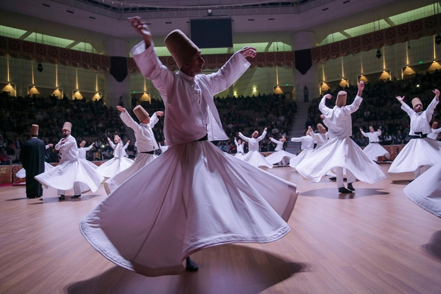

This festival celebrates the arrival of spring as well as the awakening of nature.Celebration Date: May 6th Every Year and celebrations start from May 5th onward
Interesting Tradition to Witness:
Locals jump over a fire on the eve of Hıdırellez & this is believed to cure sickness and also prevent the evil eye.
People who wish for property leave food bowls, pantries and purses out in the open.
Wishing trees are set up around and it is believed that if you
wish something on the day of Hıdırellez, it will come true.

Ahirkapi Hidirellez Festival
The festival celebrates the thoughts and recitations of the great Sufic saint and the 13th-century Sufi poet Jalaluddin Rumi. He was one of the world’s greatest philosopher and the father of the Mevlevi sect. The music, dance, listening and spiritual experience come together to enchant you during the dance of the Dervishes.